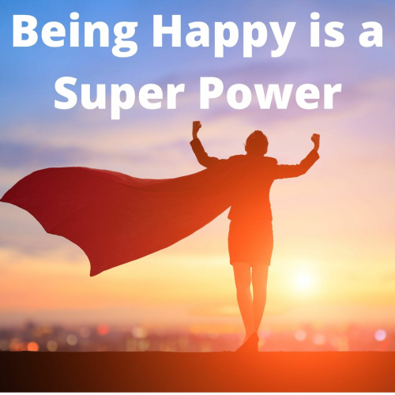

If I was the superhero, the power I would want is the ability to make people happy. No superhero I've heard of can do that. Making people happy is a unique ability, and it could change the world. It could stop violence, drugs, and suicide. What I mean by that is this: If people were happy, they would not even want to kill people. Also, people usually take drugs to feel better.
